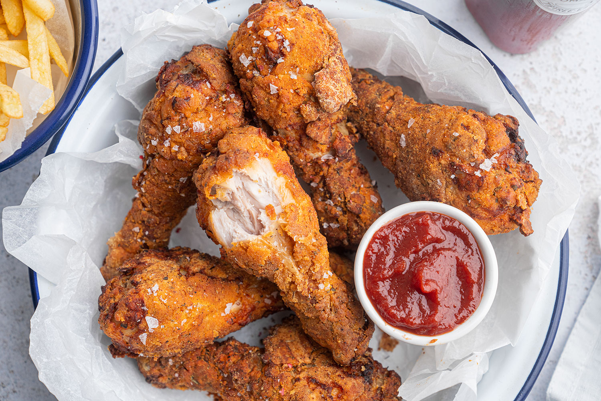

Fried Chicken

Description:
Crispy and juicy fried chicken with a golden brown crust. This classic recipe will satisfy your comfort food cravings.
Ingredients:
- 1 whole chicken, cut into pieces
- 2 cups all-purpose flour
- 2 teaspoons paprika
- 1 teaspoon garlic powder
- 1 teaspoon onion powder
- 1 teaspoon salt
- ½ teaspoon black pepper
- ½ teaspoon cayenne pepper (optional)
- 2 large eggs
- 1 cup buttermilk
- Vegetable oil, for frying
Instructions:
- Prepare Chicken: Rinse the chicken pieces under cold water and pat dry with paper towels.
- Prepare Breading: In a large bowl, combine flour, paprika, garlic powder, onion powder, salt, black pepper, and cayenne pepper (if using).
- Prepare Wet Mix: In another bowl, whisk together eggs and buttermilk.
- Coat Chicken: Dip each chicken piece into the wet mix, then dredge in the flour mixture, ensuring a thorough coating.
- Heat Oil: In a large skillet or deep fryer, heat vegetable oil to 350°F (175°C).
- Fry Chicken: Fry the chicken pieces in batches, without overcrowding, until golden brown and cooked through, about 8-10 minutes per side. Drain on paper towels.
- Serve: Serve hot and enjoy with your favorite sides.